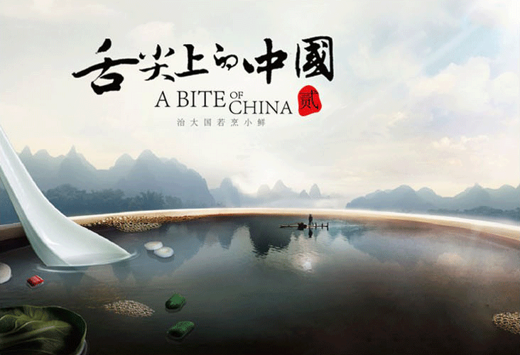

《舌尖上的中国第二季》作为一部探讨中国人与食物之间关系的美食纪录片， 以食物为窗口，读懂中国————通过美食，使人们可以有滋有味地认知这个古老的 东方国度。“一方水土养一方人”，该片将通过展示人们日常生活中与美食相关的 多重侧面，描绘与感知中国人的文化传统、家族观念、生活态度与故土难离。 人们收获、保存、烹饪、生产美食，并在其过程中保存和传承食物所记载的味觉记忆、 饮食习俗、文化样态与家常情感。该片共8集，从时节、脚步、心传、家常、秘境、相逢、三餐 七个角度来讲述中国美食故事，另外第八集揭秘“舌尖”拍摄背后的故事。

